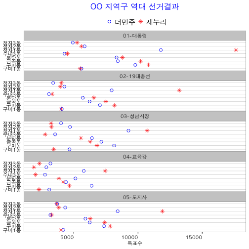

데이터 과학자가 바라본 20대 총선
역대선거 투표율
역대투표율 분석
제20대 총선의 경우 특정 지역구의 투표율을 분석하려면, 기본적인 통계적인 지식이 필요하다. 물론, 과거 선거에 대한 경험과 지식도 요구된다. 일단 성공적인 투표율 예측 및 현황 파악을 위해서 과거 선거중에서 가장 유사한 의미를 갖는 선거결과를 분석하는 것이 좋다.
예를 들어, 제20대 총선의 가장 좋은 예측데이터는 아마도 제19대 총선이 될 것이다. 하지만, 4년전 데이터로 그동안 많은 변화가 있음을 상식적으로 이해할 수 있고, 선거구 획정등의 이유로 인해서 사과대사과 비교와 같은 논리가 적용이 되지 않는다. 그렇다고 다른 뾰족한 데이터를 찾는 것도 힘들다.
그렇다고 포기할 것은 아니고, 2012년 있었던 대통령 선거, 2012년에 있었던 국회의원선거, 2014년에 있었던 지방자치단체장 선거, 교육감선거등의 자료를 취합하는 것은 어려운 일이 아니고, 이를 기반으로 하여 정확하지는 못하지만, 나름 추세는 확인할 수 있다.
1. 역대 선거 투표율 분석 데이터 가져오기
중앙선거관리위원회 분야별 정보 > 선거정보 > 자료실에서 예측하려고 하는 분야 데이터를 모두 다운로드 받아 정리한다. 많은 부분 수작업으로 목표를 하고 있는 통계모형 혹은 시각화에 맞춰 데이터를 정리한다.
R Graph Catalog 사이트에는 R 시각화를 위한 그래프 카탈로그가 전시되어 있고, 물론 코드와 데이터도 함께 제공되고 있다. 따라서, 해당 그래프 제작을 위한 데이터를 맞춰 ggplot 함수에 설정해서 넣으면 원하는 결과를 얻을 수 있다.
역대선거 투표율 데이터 시각화를 하는 방법에 영감을 준 R 그래프는 Fig05-04 Barley Data로 더민주와 새누리 역대선거 지지율을 동별로 나눠 한눈에 비교할 수 있도록 시각화한다.
#================================================================
# 1. 데이터 가져오기
#================================================================
library(readxl)
hd_data <- read_excel("~/Dropbox/01_data_science/survey-2016/data/04-역대선거/election.xlsx")2. 데이터 정제
데이터를 ggplot에 사용될 형태로 정제한다.
#================================================================
# 2. 데이터 정제
#================================================================
hd_data$election <- factor(hd_data$election,
levels = c("01-대통령", "02-19대총선",
"03-성남시장","04-교육감",
"05-도지사"))
hd_data$party <- factor(hd_data$party)3. 시각화
2012년부터 실시된 주요 선거데이터를 ggplot으로 시각화한다. ggplot에서 한글처리를 위한 전처리 과정과 폰트 설정과정을 거치고, 글자크기도 보기좋게 설정한다. 대통령선거 이후 새누리와 더민주 득표율 변화를 주요 선거별로 비교해 볼 수 있고, 각 동수준에서도 이를 확연히 볼 수 있다.
#================================================================
# 3. 데이터 시각화
#================================================================
library(ggplot2)
source("~/Dropbox/01_data_science/00-hangul-plot-setting.R") # http://freesearch.pe.kr/archives/4446 참조
ggplot(hd_data, aes(x = as.numeric(votes), y = dong, group = party)) +
geom_point(aes(shape = party, color=party), size = 2.5) +
facet_wrap(~ election, ncol = 1) +
scale_colour_manual(values =c("blue", "red")) +
scale_shape_manual(values = c(1, 8)) +
labs(x = "득표수", y = NULL) +
ggtitle("OO 지역구 역대 선거결과") +
theme_bw() +
theme(panel.grid.minor = element_blank(),
panel.grid.major.x = element_blank(),
panel.margin = unit(0, "cm"),
panel.grid.major.y = element_line(colour = "grey"),
plot.title = element_text(size = rel(1.3), face = "bold", family="AppleGothic", colour="blue"),
strip.text.x = element_text(size = 10, family="AppleGothic"),
axis.text.y = element_text(size = 10, family="AppleGothic"),
axis.ticks.y = element_blank(),
axis.text.x = element_text(size = 10, angle = 0, hjust = 1, family="AppleGothic"),
axis.title.x = element_text(size = 10, family="AppleGothic"),
legend.title = element_blank(),
legend.key = element_blank(),
legend.position = "top",
legend.text = element_text(size = 14, family="AppleGothic"),
legend.key.height = unit(0,"line")) 